SkelemanJoob
Role: Programming, Design, VFX, Modeling/Animation
AI-Oriented Dungeon Survival
Download and play from itch.io
View repository on github
About
Made in UE5, SkelemanJoob was my final project for an AI programming class. The project required that NPCs in the game use an advanced finite state machine for logic and a sense ability for detecting targets. I chose to create a linear dungeon experience in which the player recieves a task from a wizard to retrieve his sacred item. The player is equipped with nothing but a crossbow that they can either shoot or bash with. In this short experience, the player must venture from chamber to chamber within a dungeon, clearing out any enemies that stand in their way.
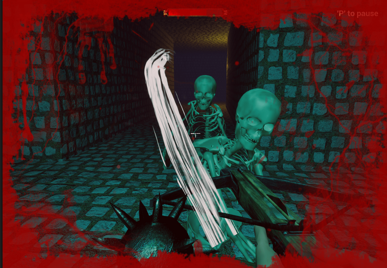
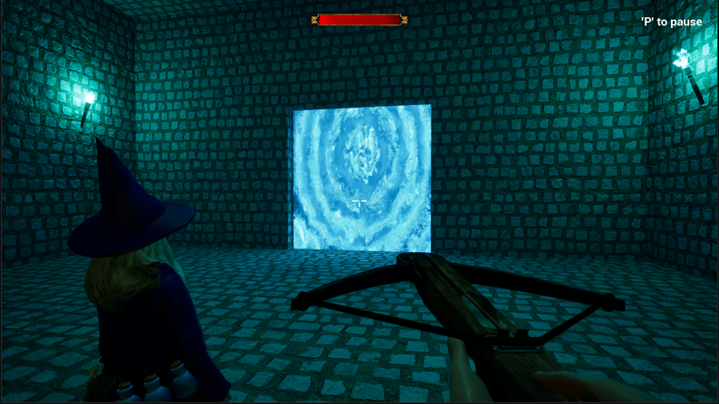
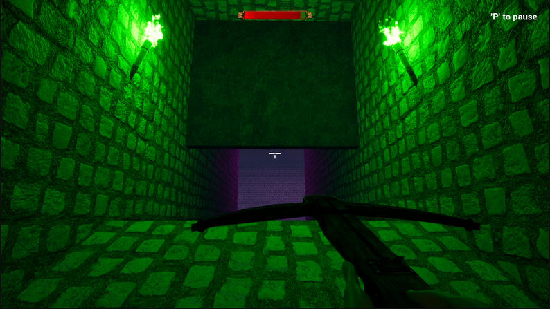
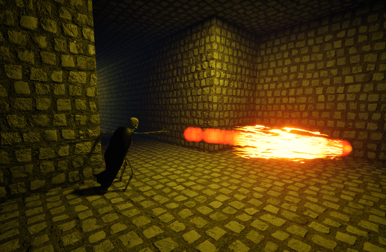
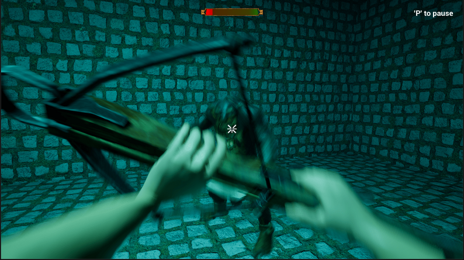
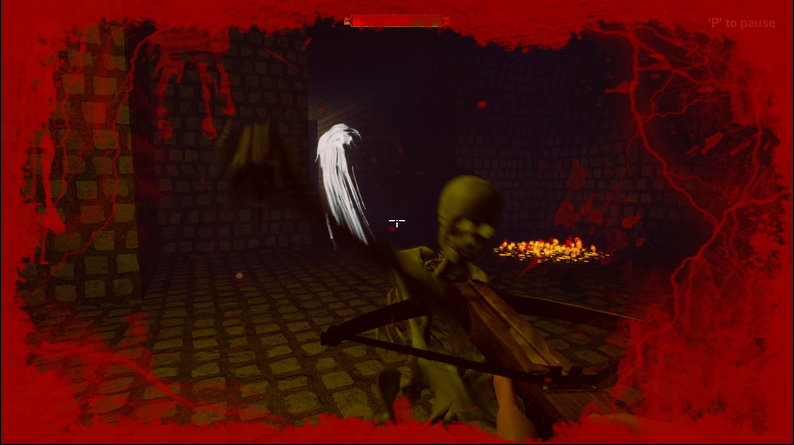
Assets
The following assets were made by me. All others were outsourced:
- Models: Player and crossbow
- Animations: Player and crossbow
- VFX: All vfx
- Sound: All voicelines
State Machines
The basis for all enemies is an advanced finite state machine equipped to each one. An FSM based AI routine performs by controlling one singular state at a time and transitioning from that singular state to another state depending on supplied conditions. Each enemy can define what possible states it has and the transitions between those states. The FSM itself need only update its current state.
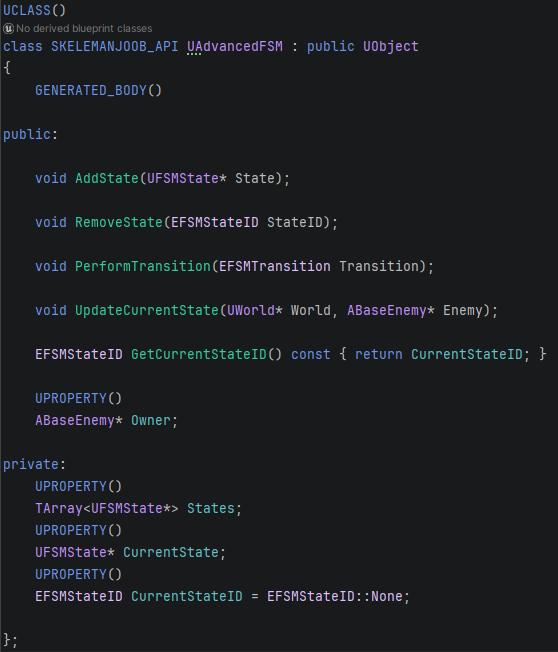
These enemies will initially patrol a given area until they sense their target. Once they've sensed a target they will move to their chase state.

A single state has four optional functions.
- OnEnter: Defines what happens as soon as the state is entered.
- Reason: Defines logic related to changing states from current state or alternative behavior within the current state.
- Act: General activity related to the current state such as timers or prompting an attack animation.
- OnExit: Logic that occurs before the state is fully left such as removing focus.
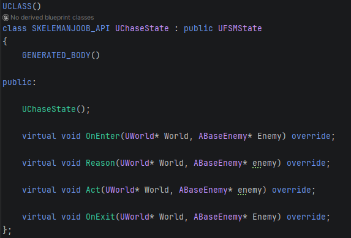
At runtime enemies communicate with their FSM in order to add their necessary states to it in addition to the transitions that those states can perform. For example, a patrolling state need not transition straight to attacking so there is no reason to give it such a transition. We give patrol state a possible transition to a chasing state and the chasing state will handle transitioning to attacking. This construction function is also where we declare how the enemy senses its desired targets. In this case it simply uses vision.
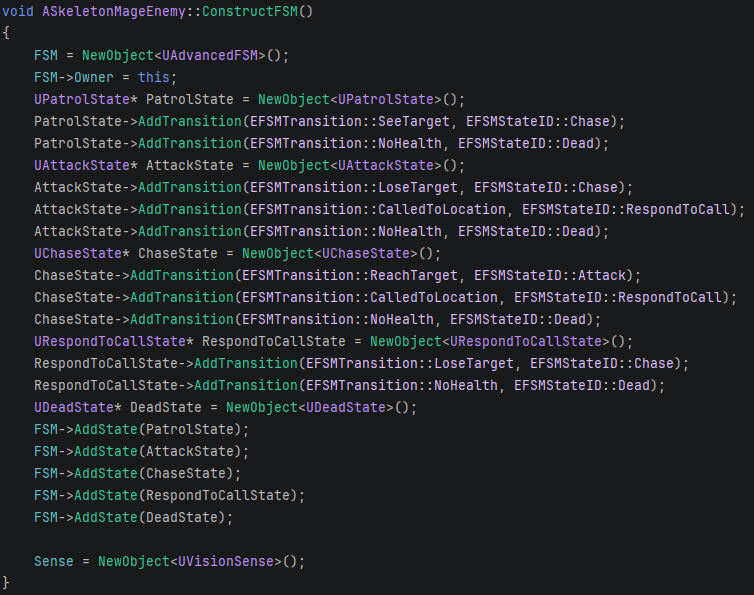
As seen above. The mage enemy and fighter enemy have a "RespondToCallState". The state will be reached when an event occurs such as the troll scholar alerting nearby enemies that it is going to perform a heal. Only enemies missing health will respond to the call.

NPCs also have a "Sense" object which dictates how they actually detect their targets. None of the current enemies require a sense beyond vision but any additional senses could be added such as one where they detect the player only when the player makes noise.
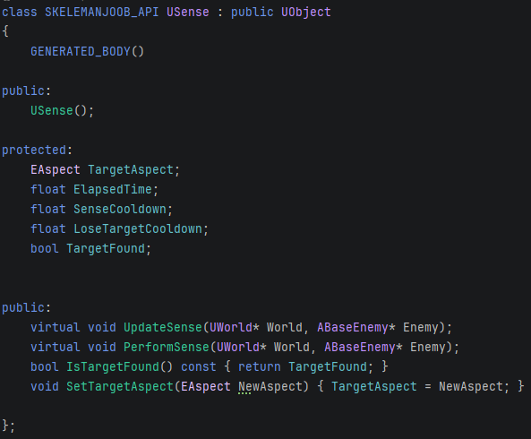
Enemies
Skeleton Mage
The skeleton mage is a range enemy that launches fireballs. These fireballs do high direct damage but can be easily avoided by side-stepping. In the event that a fireball hits the ground, it leaves behind a pool of fire that does damage over time if stood in.
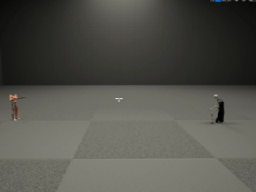

Skeleton Fighter
The skeleton fighter weilds a mace and is the quickest enemy. It moves faster than the player meaning it will eventually get within melee range. This is where the powerful "bash" mechanic comes into play, allowing you to effectively stun lock enemies so long as the timing is right.


Troll Scholar
The troll scholar has a ranged attack similar to the mage that deals significantly more damage on direct hit. The attack has no splash damage so a lone troll is a weak opponent. The troll's main role is to support its fellow combatants by occasionally utilising a heal ability. Any damaged allies will flock to the troll to recieve healing after it is done charging.